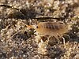

talitridae

Definition: Talitridae is a family of amphipods. Terrestrial species are often referred to as landhoppers and beach dwellers are called sandhoppers or sand fleas. The name sand flea is misleading, though, because these talitrid amphipods are not siphonapterans (true fleas), do not bite people, and are not limited to sandy beaches.Marine amphipods are often washed up in the strandline, but die rapidly on drying out. Talitrids differ in being able to survive for a long time out of water; some Southern Hemisphere species are entirely terrestrial.It contains these genera:
Source: Wikipedia
Wikipedia Page (Something wrong with this association? Let us know.)
Wikidata Page (Something wrong with this association? Let us know.)